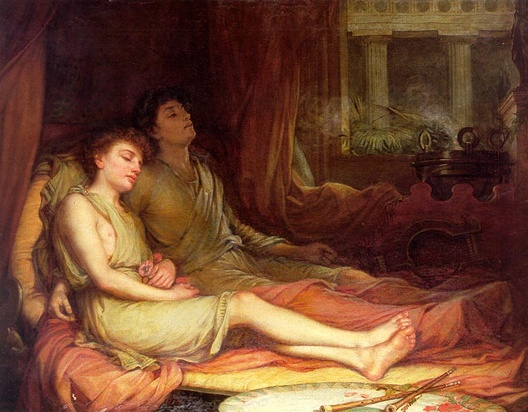

Listen to 'A Song' in English

XXXII CHANSON
Je t'ai croisé à la naissance de l'aurore,
Ami. Ma main glacée en ta main tiède dort.
Tu chantais à mi voix ce chant qui me dévore.
Les mots n'avaient figé le fleuve, ni l'essor
Impitoyable des étés. La pierre dore
An après an le cénotaphe. Un cercle clair
D'abeilles tourne. Le buisson creux garde la nuit.
Cet enfant prisonnier qui rêvait de lumière,
Qui rêvait de rosée et de neuve lumière
Et pleure dans son coin pleurera-t-il toujours?
La rosée se glace aux flancs des vignes. La fleur crisse
Et l'herbe sous tes pas que tu broyais est soeur
Du vin. Les nuits en nectars s'accomplissent
Quand le gel mène sa noce et les ardeurs
Du soleil englouti régnant aux profondeurs
Des ceps. Sous les dents crèvent les pulpes lourdes.
Un cortège en chantant escorte les époux.
Mais non, seul le froid règne et mes rêves de jours
Anciens, et mes obsessions, et sourdes,
Les promesses qui n'ont plus cours.
Ami, rien n'enchaîne le matin, ni l'haleine
Qui se glace sur les joncs lisses, ni le blanc
Crissement des marches de bois. Elles sommeillent
Au creux du vent les hirondelles, un instant,
Puis leur fuite s'éparpille. Rien, ni le chant
Que tu fredonnes, ni la paume qui referme
Sur mon poing sa prison n'enchaîneront mon songe
Où les ferments des nuits n'ont qu'eux mêmes pour terme,
Où sur des vols enfuis se lève une chanson.
Michel Galiana (c) 1991
XXXII A SONG
I passed you on my way, my friend, early at dawn,
And now my frozen hand lies in your hand so warm.
The song that in a low voice you crooned wears me down.
Whose words neither rivers could halt, nor the return
Of merciless summers. Every new year tinges
With gold the empty grave. A bright circle of bees
Swarms round the coppice which hollow night encloses.
Shall the imprisoned child who was dreaming of light,
Dreaming of morning dew and dreaming of new light,
Who snivels all alone, for ever shed sour tears ?
Morning dew freezes in the womb of grapes. Flowers
Crunch and the grass which you have trampled underfoot
Is akin to the wine. Nights result in nectars
Whereas the frost triumphs and, buried in the root
Of the vine stocks, blazing sun as a monarch reigns.
Under your teeth heavy pulps burst. A procession
With solemn bridal hymns escorts the bride and groom...
No, the cold reigns supreme, as do my obsession,
My dreams of bygone days and indistinctly loom
Promises out of fashion.
My friend, nothing ever could chain up the morning;
Neither the freezing breath on the sleek stems of rush
Nor, on the wooden stairs, your step's hollow creaking.
For a while swallows have filled the wind with a dash,
Until they spread away. Nothing, neither the tune
You are humming away, nor my fist that in vain
Shuts as to imprison, like in a jail, my dream
Where the fermenting nights have, but themselves, no aim,
Where of birds flown away has arisen a song.
Commentaires générés par IA en 2026
Transl. Christian Souchon 01.01.2004 (c) (r) All rights reserved
Comments generated by AI in 2026
|
Brève analyse de l’imagerie de *Chanson* 1. La rencontre à l’aube et la main glacée Le poème s’ouvre sur l’image de l’aube comme un seuil : ce moment où la nuit desserre son étreinte tout en laissant subsister ses vestiges. La main glacée, blottie dans la main chaude de l’ami, ne relève pas du simple toucher ; elle symbolise un éveil rendu possible par une présence, une chaleur fragile qui ne dissipe pas encore le froid intérieur. Le chant à « voix basse » agit déjà comme une force d’érosion : il « m’use », entité obsédante, douce mais implacable. 2. Rivière, étés et cénotaphe Chez Galiana, l’imagerie de la rivière est indissociable du temps et de la mémoire. Ici, les mots n’ont pas « arrêté la rivière » ; le langage n’a donc pas stoppé le cours de l’expérience. Les « étés impitoyables » évoquent le passage du temps comme une force d’érosion. Le cénotaphe, doré « année après année », constitue une image puissante : une tombe sans corps, un monument à l’absence. Les abeilles qui gravitent autour forment un halo vivant, un rituel naturel célébrant le vide. 3. L’enfant prisonnier rêvant de lumière Cet enfant est l’une des figures récurrentes chez Galiana : le captif intérieur, cette part de soi qui aspire à l’aube, à la rosée et à une « lumière nouvelle ». La répétition du mot « lumière » souligne l’intensité de ce désir. Ses larmes sont « acides », suggérant l’amertume, la stagnation ou l’effet corrosif d’un désir inassouvi. La question « pleurera-t-il à jamais ? » n’est pas rhétorique : elle est existentielle. 4. Image du vignoble : Noces de givre et soleil enfoui Le deuxième mouvement déplace le cadre vers le vignoble, l’un des paysages symboliques les plus fertiles chez Galiana. La rosée qui gèle sur les raisins, les fleurs qui craquent, l’herbe écrasée : autant d’images de fragilité sous la contrainte, de vie suspendue par le froid. Le givre « menant ses noces » constitue une inversion saisissante : une célébration de la destruction. Parallèlement, le « soleil enfoui dans la racine » règne dans les profondeurs — la lumière muée en ténèbres, la chaleur en froid. L’éclatement de la pulpe sous la dent évoque la consomption, la violence et la métamorphose. Le cortège nuptial est aussitôt récusé : « Non, le froid règne en maître. » Cette négation est capitale. Le poème refuse toute consolation et insiste sur la domination du froid, de l’obsession et des promesses révolues. 5. Le matin libéré et la dispersion des hirondelles Le dernier mouvement revient au matin, mais un matin désormais affranchi : « rien ne saurait enchaîner le matin ». Le souffle se fige, les marches de bois craquent, les hirondelles dorment un court instant dans le vent avant de se disperser. Ces images évoquent la fugacité, l’impossibilité de retenir quoi que ce soit — chaleur, son, vol ou compagnie. Le chant de l’ami et la main qui se referme ne peuvent emprisonner le rêve. Le rêve est autonome, façonné uniquement par « les nuits en fermentation », qui n’ont « qu’elles-mêmes pour fin ». C’est là l’un des vers les plus marquants de Galiana : la nuit se réfère à elle-même, se consume elle-même, sans finalité extérieure. 6. L’image finale : Un chant s’élevant des envols disparus Le poème s’achève sur un paradoxe : des « oiseaux envolés » surgit un chant. L’absence devient création ; le départ devient résonance. Telle est la vérité la plus profonde du poème : la perte engendre la musique, et le rêve de l’observateur n’est pas enchaîné, mais libéré par ce qui s’échappe. Pourquoi le terme « chanson » pour un poème aussi solennel ? 1. La « chanson » comme masque de simplicité Galiana utilise souvent la chanson pour dissimuler la gravité sous une forme archaïque ou populaire. Ce mot évoque la tradition orale, les chansons de l’enfance, les refrains populaires, cette « petite » forme porteuse de « grandes » vérités. En qualifiant de chanson ce poème élégiaque et métaphysique, il l’inscrit dans la lignée de la complainte populaire, ce type de chant entonné à l’aube, dans les vignes ou lors des funérailles. La solennité n’est pas contredite par ce mot ; elle est au contraire rehaussée par le contraste. 2. La « chanson » comme retour aux origines Le poème s’ouvre à l’aube, sur une main glacée qui se réchauffe au contact de celle d’un ami. C’est l’instant primordial de la rencontre, un moment presque mythique. Le terme « chanson » rattache le poème aux premières expressions humaines, aux premiers gestes chantés, à la voix pré-littéraire. Les « chansons » de Galiana sont souvent des textes de seuil : des poèmes qui se situent entre l’enfance et l’âge adulte, la nuit et le jour, le silence et la parole. L’enfant prisonnier rêvant de lumière appartient précisément à cet univers. 3. La « chanson » comme contrepoids à la mort Le poème regorge d’images liées à la mort : cénotaphe, rosée glacée, pulpes éclatant sous la dent, promesses « démodées », obsessions d’un temps révolu. Face à cela, la chanson agit comme un geste de résistance. C’est la forme de vie la plus modeste qui soit, l’étincelle vocale minimale qui persiste alors même que tout le reste se fige. Le poème s’achève sur ces mots : « Là où des oiseaux envolés a surgi une chanson. » La chanson est ce qui demeure une fois l’envol accompli. Qualifier le poème de « chanson » revient donc à affirmer la survie. 4. « Chanson » et la libération du guetteur Votre intuition concernant le « guetteur perdu » est ici capitale. Le guetteur — exposé, solitaire, posté à la frontière — est « relevé ». La chanson est ce qui s’élève de sa libération. C’est le chant d’après, le résidu de la vigilance. Galiana emploie le mot « chanson » pour désigner l’instant où la vigilance devient voix, où la perte devient résonance, où les envols disparus deviennent musique. 5. La « chanson » comme forme paradoxale Le poème est solennel, mais le titre insiste sur la petitesse. Ce paradoxe est voulu. Une chanson est modeste, fragile, éphémère, et pourtant capable de porter tout le poids de la mémoire. Le choix de Galiana n’est donc pas ironique, mais structurel : le poème met en œuvre la transformation du deuil, du givre et des envols disparus en la plus petite unité de chant possible. En bref Michel nomme ce poème solennel « Chanson » parce que le poème lui-même en explique le sens : des oiseaux disparus, de la rosée gelée, des larmes de l’enfance, de la libération du guetteur — un chant s’élève. Le titre est l’image finale du poème. |
Brief Commentary on the Imagery of Chanson 1. Dawn Encounter and the Frozen Hand The poem opens with an image of dawn as threshold: the moment when night loosens its hold but its residue remains. The frozen hand in the friend’s warm hand is not simply tactile—it is symbolic of awakening through companionship, a fragile warmth that does not yet dispel the inner cold. The “low voice” song is already a force of erosion: it “wears me down,” a gentle but relentless haunting. 2. River, Summers, Cenotaph Galiana’s river imagery is always tied to time and memory. Here, words have not “halted the river,” meaning language has not arrested the flow of experience. The “merciless summers” evoke the passage of time as a force of erosion. The cenotaph gilded “year after year” is a powerful image: a tomb without a body, a memorial to absence. The bees circling it form a living halo, a natural ritual around emptiness. 3. The Imprisoned Child Dreaming of Light This child is one of Galiana’s recurring figures: the inner captive, the part of the self that longs for dawn, dew, and “new light.” The repetition of “light” underscores the intensity of this longing. His tears are “sour,” suggesting bitterness, stagnation, or the corrosive effect of unfulfilled desire. The question “will he weep forever?” is not rhetorical—it is existential. 4. Vineyard Imagery: Frost-Wedding and Buried Sun The second movement shifts to the vineyard, one of Galiana’s most fertile symbolic landscapes. Dew freezing on grapes, flowers crunching, grass crushed: these are images of fragility under pressure, of life arrested by cold. Frost “leading its wedding feast” is a brilliant inversion: a celebration of destruction. Meanwhile, the “sun buried in the root” reigns in the depths—light inverted into darkness, warmth inverted into cold. The bursting pulps under teeth evoke consumption, violence, and transformation. The bridal procession is immediately denied: “No, the cold reigns supreme.” This negation is crucial. The poem refuses consolation, insisting on the dominance of cold, obsession, and outdated promises. 5. Morning Unchained and the Scattering of Swallows The final movement returns to morning, but now morning is unbound: “nothing ever could chain up the morning.” Breath freezes, wooden steps creak, swallows sleep briefly in the wind before scattering. These images evoke transience, the impossibility of holding onto anything—warmth, sound, flight, companionship. The friend’s song and the closing hand cannot imprison the dream. The dream is autonomous, shaped only by “the fermenting nights,” which have “but themselves, no aim.” This is one of Galiana’s most striking lines: night is self referential, self consuming, without teleology. 6. The Final Image: A Song Rising from Vanished Flights The poem ends with a paradox: from “birds flown away” arises a song. Absence becomes creation; departure becomes resonance. This is the poem’s deepest truth: loss generates music, and the watcher’s dream is not chained but liberated by what escapes. Why “chanson” for such a solemn poem? 1. “Chanson” as a mask of simplicity Galiana often uses chanson to veil gravity beneath an archaic or popular form. The word evokes: oral tradition, childhood songs, folk refrains, the “small” form that carries “large” truths. By calling this elegiac, metaphysical poem a chanson, he places it in the lineage of popular lament, the kind of song sung at dawn, in vineyards, or at funerals. The solemnity is not contradicted by the word—it is heightened by the contrast. 2. “Chanson” as a return to origins The poem begins at dawn, with a frozen hand warming in a friend’s hand. This is the primal moment of encounter, almost mythic. Calling it a chanson aligns the poem with: the earliest human expressions, the first sung gestures, the pre literary voice. Galiana’s “songs” are often threshold texts—poems that stand between childhood and adulthood, night and day, silence and speech. The imprisoned child dreaming of light belongs precisely to this realm. 3. “Chanson” as a counterweight to death The poem is full of death Imagery: cenotaph, frozen dew, pulps bursting under teeth, promises “out of fashion,” obsessions of bygone days. Against this, chanson functions as a gesture of resistance. It is the smallest possible form of life, the minimal spark of voice that persists even when everything else freezes. The poem ends with: “Where of birds flown away has arisen a song.” The song is what remains when flight is gone. Calling the poem Chanson is therefore a statement of survival. 4. “Chanson” and the watcher’s release Your insight about guetteur perdu is crucial here. The watcher—exposed, solitary, stationed at the frontier—is “raised and relieved.” The chanson is what rises from his release. It is the after song, the residue of vigilance. Galiana uses chanson to name the moment when: vigilance becomes voice, loss becomes resonance, vanished flights become music. 5. “Chanson” as a paradoxical form The poem is solemn, but the title insists on smallness. This paradox is intentional. A chanson is: modest, fragile, ephemeral and yet capable of carrying the entire weight of memory. Galiana’s choice is therefore not ironic but structural: the poem enacts the transformation of grief, frost, and vanished flights into the smallest possible unit of song. In short Michel calls this solemn poem Chanson because the poem itself explains the word: from vanished birds, from frozen dew, from childhood tears, from the watcher’s release— a song rises. The title is the poem’s final image. |
Listen to 'A Song' in English